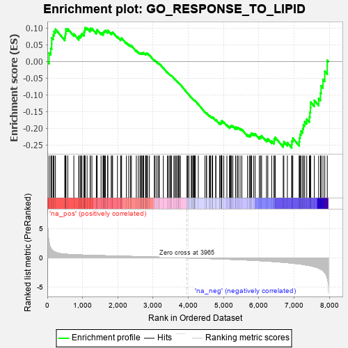
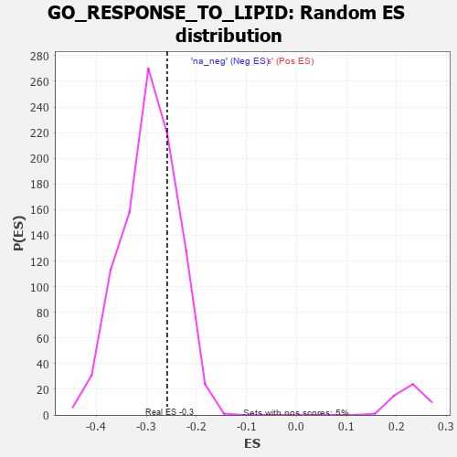

| | | Dataset | 7d |
| Phenotype | NoPhenotypeAvailable |
| Upregulated in class | na_neg |
| GeneSet | GO_RESPONSE_TO_LIPID |
| Enrichment Score (ES) | -0.25834927 |
| Normalized Enrichment Score (NES) | -0.87873894 |
| Nominal p-value | 0.7368421 |
| FDR q-value | 0.9604507 |
| FWER p-Value | 1.0 |
Table: GSEA Results Summary

Fig 1: Enrichment plot: GO_RESPONSE_TO_LIPID
Profile of the Running ES Score & Positions of GeneSet Members on the Rank Ordered List
| PROBE | GENE SYMBOL | GENE_TITLE | RANK IN GENE LIST | RANK METRIC SCORE | RUNNING ES | CORE ENRICHMENT | | 1 | TGFB3 | | | 49 | 2.654 | 0.0258 | No |
| 2 | IRS1 | | | 98 | 1.659 | 0.0398 | No |
| 3 | ADCY8 | | | 124 | 1.418 | 0.0537 | No |
| 4 | GLB1 | | | 125 | 1.416 | 0.0709 | No |
| 5 | AXIN1 | | | 166 | 1.159 | 0.0798 | No |
| 6 | RORB | | | 189 | 1.097 | 0.0902 | No |
| 7 | UFSP2 | | | 230 | 0.981 | 0.0970 | No |
| 8 | OVCA2 | | | 496 | 0.631 | 0.0706 | No |
| 9 | MYOD1 | | | 504 | 0.628 | 0.0773 | No |
| 10 | CNOT2 | | | 514 | 0.625 | 0.0837 | No |
| 11 | RWDD1 | | | 526 | 0.621 | 0.0899 | No |
| 12 | HTRA2 | | | 527 | 0.621 | 0.0974 | No |
| 13 | CCNB1 | | | 581 | 0.601 | 0.0978 | No |
| 14 | ELK1 | | | 752 | 0.545 | 0.0826 | No |
| 15 | HMGB2 | | | 892 | 0.507 | 0.0710 | No |
| 16 | HDAC5 | | | 900 | 0.506 | 0.0762 | No |
| 17 | PDCD4 | | | 941 | 0.497 | 0.0771 | No |
| 18 | CTR9 | | | 964 | 0.492 | 0.0802 | No |
| 19 | UBA5 | | | 982 | 0.488 | 0.0839 | No |
| 20 | AKT1 | | | 1040 | 0.476 | 0.0824 | No |
| 21 | YAP1 | | | 1041 | 0.475 | 0.0881 | No |
| 22 | MEF2C | | | 1054 | 0.473 | 0.0923 | No |
| 23 | FZD10 | | | 1065 | 0.470 | 0.0967 | No |
| 24 | AIFM1 | | | 1072 | 0.469 | 0.1016 | No |
| 25 | SRC | | | 1128 | 0.459 | 0.1001 | No |
| 26 | KCTD6 | | | 1213 | 0.444 | 0.0947 | No |
| 27 | RBBP7 | | | 1220 | 0.443 | 0.0993 | No |
| 28 | CDC73 | | | 1265 | 0.436 | 0.0990 | No |
| 29 | FKBP4 | | | 1390 | 0.412 | 0.0881 | No |
| 30 | NOCT | | | 1402 | 0.409 | 0.0916 | No |
| 31 | CARM1 | | | 1413 | 0.408 | 0.0953 | No |
| 32 | LIAS | | | 1524 | 0.387 | 0.0858 | No |
| 33 | TADA3 | | | 1580 | 0.378 | 0.0834 | No |
| 34 | PAF1 | | | 1588 | 0.376 | 0.0870 | No |
| 35 | RNF6 | | | 1605 | 0.373 | 0.0895 | No |
| 36 | CDK4 | | | 1626 | 0.370 | 0.0914 | No |
| 37 | RXRA | | | 1647 | 0.365 | 0.0932 | No |
| 38 | DDX18 | | | 1711 | 0.355 | 0.0895 | No |
| 39 | KDM5D | | | 1716 | 0.353 | 0.0932 | No |
| 40 | ABR | | | 1812 | 0.335 | 0.0851 | No |
| 41 | GATA4 | | | 1837 | 0.330 | 0.0860 | No |
| 42 | TRIM5 | | | 1852 | 0.327 | 0.0882 | No |
| 43 | GPX4 | | | 1989 | 0.306 | 0.0745 | No |
| 44 | KDM3A | | | 2078 | 0.294 | 0.0667 | No |
| 45 | TAF7 | | | 2092 | 0.292 | 0.0686 | No |
| 46 | BMP7 | | | 2107 | 0.290 | 0.0703 | No |
| 47 | CREB1 | | | 2243 | 0.269 | 0.0563 | No |
| 48 | REST | | | 2308 | 0.259 | 0.0512 | No |
| 49 | MIF | | | 2357 | 0.252 | 0.0481 | No |
| 50 | OTUD5 | | | 2385 | 0.247 | 0.0476 | No |
| 51 | MBD3 | | | 2524 | 0.223 | 0.0326 | No |
| 52 | PIAS2 | | | 2581 | 0.215 | 0.0280 | No |
| 53 | GNPAT | | | 2629 | 0.208 | 0.0245 | No |
| 54 | KAT5 | | | 2644 | 0.206 | 0.0252 | No |
| 55 | WDR83 | | | 2669 | 0.203 | 0.0246 | No |
| 56 | SASH1 | | | 2682 | 0.201 | 0.0255 | No |
| 57 | PHB2 | | | 2712 | 0.197 | 0.0242 | No |
| 58 | SLIT2 | | | 2724 | 0.195 | 0.0251 | No |
| 59 | RORA | | | 2730 | 0.193 | 0.0268 | No |
| 60 | XRN1 | | | 2786 | 0.185 | 0.0220 | No |
| 61 | AQP3 | | | 2796 | 0.184 | 0.0231 | No |
| 62 | FER | | | 2803 | 0.183 | 0.0245 | No |
| 63 | PCK2 | | | 2823 | 0.180 | 0.0243 | No |
| 64 | NR2E1 | | | 2844 | 0.177 | 0.0239 | No |
| 65 | FGFR2 | | | 2895 | 0.167 | 0.0195 | No |
| 66 | LEF1 | | | 3037 | 0.144 | 0.0031 | No |
| 67 | UFL1 | | | 3041 | 0.144 | 0.0045 | No |
| 68 | HDAC1 | | | 3086 | 0.138 | 0.0005 | No |
| 69 | OGG1 | | | 3135 | 0.132 | -0.0040 | No |
| 70 | GCH1 | | | 3166 | 0.127 | -0.0063 | No |
| 71 | AHR | | | 3175 | 0.126 | -0.0058 | No |
| 72 | TRIP4 | | | 3290 | 0.107 | -0.0192 | No |
| 73 | MED1 | | | 3405 | 0.089 | -0.0327 | No |
| 74 | RXRG | | | 3435 | 0.085 | -0.0354 | No |
| 75 | CNOT1 | | | 3473 | 0.081 | -0.0392 | No |
| 76 | FES | | | 3501 | 0.077 | -0.0417 | No |
| 77 | UFM1 | | | 3506 | 0.077 | -0.0413 | No |
| 78 | UBR5 | | | 3518 | 0.074 | -0.0418 | No |
| 79 | MAPK3 | | | 3589 | 0.062 | -0.0500 | No |
| 80 | CBL | | | 3621 | 0.056 | -0.0533 | No |
| 81 | FIS1 | | | 3654 | 0.051 | -0.0568 | No |
| 82 | CD180 | | | 3686 | 0.046 | -0.0602 | No |
| 83 | HSF1 | | | 3718 | 0.039 | -0.0637 | No |
| 84 | DAXX | | | 3722 | 0.038 | -0.0637 | No |
| 85 | HTR1B | | | 3745 | 0.035 | -0.0661 | No |
| 86 | SBNO2 | | | 3774 | 0.032 | -0.0693 | No |
| 87 | NCOR1 | | | 3961 | 0.000 | -0.0931 | No |
| 88 | CRLS1 | | | 3975 | -0.003 | -0.0947 | No |
| 89 | RNF14 | | | 4013 | -0.010 | -0.0994 | No |
| 90 | PARP1 | | | 4014 | -0.010 | -0.0992 | No |
| 91 | WNT2 | | | 4084 | -0.021 | -0.1078 | No |
| 92 | PDE4B | | | 4089 | -0.022 | -0.1081 | No |
| 93 | ABL1 | | | 4125 | -0.027 | -0.1122 | No |
| 94 | HMGCL | | | 4141 | -0.031 | -0.1138 | No |
| 95 | DDX17 | | | 4161 | -0.035 | -0.1158 | No |
| 96 | GFI1 | | | 4168 | -0.037 | -0.1161 | No |
| 97 | PDX1 | | | 4179 | -0.038 | -0.1169 | No |
| 98 | FMO1 | | | 4181 | -0.038 | -0.1166 | No |
| 99 | GGT7 | | | 4200 | -0.041 | -0.1184 | No |
| 100 | WNT11 | | | 4282 | -0.056 | -0.1281 | No |
| 101 | GPR83 | | | 4471 | -0.088 | -0.1512 | No |
| 102 | SNW1 | | | 4514 | -0.096 | -0.1554 | No |
| 103 | WNT5B | | | 4517 | -0.098 | -0.1545 | No |
| 104 | PDCD7 | | | 4595 | -0.117 | -0.1629 | No |
| 105 | ADTRP | | | 4612 | -0.120 | -0.1635 | No |
| 106 | CLK2 | | | 4628 | -0.124 | -0.1639 | No |
| 107 | MTAP | | | 4675 | -0.133 | -0.1682 | No |
| 108 | PTK7 | | | 4687 | -0.136 | -0.1680 | No |
| 109 | GDAP2 | | | 4689 | -0.137 | -0.1664 | No |
| 110 | PIM1 | | | 4776 | -0.152 | -0.1756 | No |
| 111 | WBP2 | | | 4780 | -0.153 | -0.1742 | No |
| 112 | CLU | | | 4889 | -0.174 | -0.1859 | No |
| 113 | SLIT3 | | | 4890 | -0.175 | -0.1838 | No |
| 114 | CBX3 | | | 4923 | -0.183 | -0.1857 | No |
| 115 | CASP1 | | | 4932 | -0.185 | -0.1845 | No |
| 116 | FZD4 | | | 4940 | -0.186 | -0.1831 | No |
| 117 | EP300 | | | 4941 | -0.186 | -0.1809 | No |
| 118 | XRCC5 | | | 4946 | -0.187 | -0.1791 | No |
| 119 | CHMP5 | | | 4952 | -0.188 | -0.1775 | No |
| 120 | KLF4 | | | 5005 | -0.198 | -0.1817 | No |
| 121 | DDX54 | | | 5093 | -0.222 | -0.1902 | No |
| 122 | TBX1 | | | 5166 | -0.241 | -0.1965 | No |
| 123 | HDAC6 | | | 5183 | -0.244 | -0.1956 | No |
| 124 | SMO | | | 5195 | -0.247 | -0.1940 | No |
| 125 | ATM | | | 5210 | -0.249 | -0.1928 | No |
| 126 | TMF1 | | | 5225 | -0.251 | -0.1916 | No |
| 127 | PTEN | | | 5262 | -0.261 | -0.1930 | No |
| 128 | TCF21 | | | 5340 | -0.283 | -0.1995 | No |
| 129 | LMO3 | | | 5342 | -0.283 | -0.1962 | No |
| 130 | PRDX3 | | | 5389 | -0.293 | -0.1985 | No |
| 131 | LATS1 | | | 5412 | -0.298 | -0.1978 | No |
| 132 | CPT1A | | | 5467 | -0.311 | -0.2009 | No |
| 133 | VDR | | | 5517 | -0.325 | -0.2033 | No |
| 134 | CASP8 | | | 5678 | -0.369 | -0.2193 | No |
| 135 | CALCR | | | 5730 | -0.386 | -0.2212 | No |
| 136 | TLR2 | | | 5761 | -0.395 | -0.2202 | No |
| 137 | ABCG1 | | | 5778 | -0.399 | -0.2175 | No |
| 138 | PMVK | | | 5792 | -0.403 | -0.2142 | No |
| 139 | STRN3 | | | 5849 | -0.417 | -0.2164 | No |
| 140 | CDO1 | | | 5892 | -0.432 | -0.2165 | No |
| 141 | XBP1 | | | 6011 | -0.475 | -0.2259 | No |
| 142 | NR2E3 | | | 6048 | -0.488 | -0.2246 | No |
| 143 | CALR | | | 6077 | -0.499 | -0.2222 | No |
| 144 | SMAD2 | | | 6216 | -0.541 | -0.2333 | No |
| 145 | TFAP4 | | | 6254 | -0.556 | -0.2313 | No |
| 146 | NPC1 | | | 6364 | -0.602 | -0.2380 | No |
| 147 | MALT1 | | | 6432 | -0.634 | -0.2389 | No |
| 148 | ABCA2 | | | 6433 | -0.634 | -0.2313 | No |
| 149 | SRR | | | 6464 | -0.646 | -0.2273 | No |
| 150 | PAK1 | | | 6691 | -0.757 | -0.2471 | No |
| 151 | EGFR | | | 6708 | -0.765 | -0.2399 | No |
| 152 | ADAM9 | | | 6808 | -0.819 | -0.2427 | No |
| 153 | LRP8 | | | 6931 | -0.889 | -0.2476 | Yes |
| 154 | GHSR | | | 6937 | -0.894 | -0.2374 | Yes |
| 155 | DNM1L | | | 6963 | -0.913 | -0.2296 | Yes |
| 156 | CFTR | | | 7143 | -1.030 | -0.2400 | Yes |
| 157 | DDX5 | | | 7152 | -1.037 | -0.2285 | Yes |
| 158 | AR | | | 7169 | -1.046 | -0.2179 | Yes |
| 159 | TSPO | | | 7194 | -1.065 | -0.2081 | Yes |
| 160 | ABCA1 | | | 7243 | -1.113 | -0.2008 | Yes |
| 161 | PLPP1 | | | 7262 | -1.135 | -0.1893 | Yes |
| 162 | MSX2 | | | 7299 | -1.171 | -0.1798 | Yes |
| 163 | WDR35 | | | 7357 | -1.225 | -0.1723 | Yes |
| 164 | KMO | | | 7432 | -1.308 | -0.1659 | Yes |
| 165 | GGT1 | | | 7447 | -1.329 | -0.1516 | Yes |
| 166 | CNGA3 | | | 7463 | -1.353 | -0.1372 | Yes |
| 167 | SHPK | | | 7469 | -1.360 | -0.1213 | Yes |
| 168 | LITAF | | | 7572 | -1.511 | -0.1161 | Yes |
| 169 | ADCY1 | | | 7695 | -1.752 | -0.1106 | Yes |
| 170 | CASP3 | | | 7747 | -1.902 | -0.0941 | Yes |
| 171 | PDE4D | | | 7764 | -1.944 | -0.0726 | Yes |
| 172 | TRAF6 | | | 7818 | -2.157 | -0.0533 | Yes |
| 173 | CALM3 | | | 7869 | -2.525 | -0.0291 | Yes |
| 174 | MRC1 | | | 7940 | -3.475 | 0.0040 | Yes |
Table: GSEA details [plain text format]

Fig 2: GO_RESPONSE_TO_LIPID: Random ES distribution
Gene set null distribution of ES for GO_RESPONSE_TO_LIPID